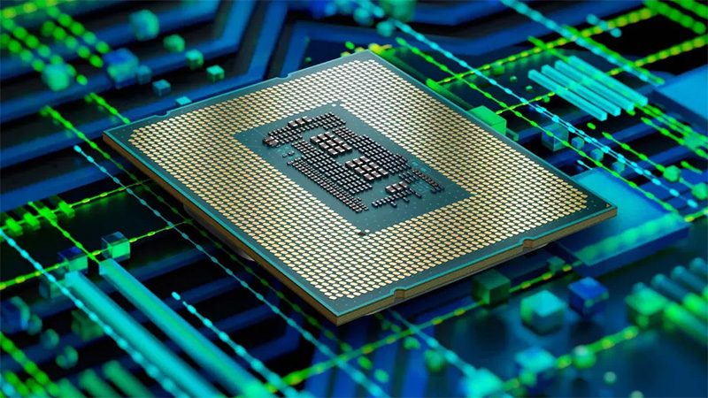

Компания PowerLeader представит x86-процессоры Powerstar Скоро выйдут
китайские процессоры схожие с Intel Core Китайская фирма PowerLeader
сообщила о выходе первого поколения своих x86-процессоров Powerstar,
которые предназначены только для местного рынка.
Производитель заявил, что намерен ежегодно продавать 1,5 млн
экземпляров CPU Powerstar. Ожидается, что в продаже появятся и готовые
продукты с новыми процессорами, включая настольные компьютеры, рабочие
станции и промышленные ПК. В ходе пресс-конференции компания
продемонстрировала CPU с кодовым именем PL PSTAR P3 (P3-01105) с
тактовой частотой ядер 3,7 ГГц.
